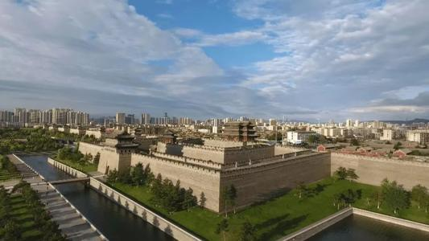

1、中国传统文化源远流长，是迄今世界上最久远、最稳定、最辉煌、最丰富、最发达的文化之一，有着不可抵挡的神奇魅力。从定义来说中国传统文化是中华.文明演化而汇集成的一种反映民族特质和风貌的民族文化，是民族历史上各种思想文化、观念形态的总体表征，是指居住在中国地域内的中华民族及其祖先所创造的、为中华民族世世代代所继承发展的、具有鲜明民族特色的、历史悠久、内涵博大精深、传统优良的文化。但是从中国传统文化的范畴来说，我们不能不感叹中国文化的博大精深;因为它涵盖了中华民族生活的方方面面，我们的衣食住行无一不体现出传统文化对我们的影响。
2、在我看来，中国传统文化中的精神应该是我们中华民族所特有的，也正是中国传统文化的魅力所在。我想，中国传统文化的精神核心取一个“和”字即足矣。中国人身上的品质，中国人的价值观世界观都可以用这个“和”字来阐释。这个“和”的精神中也有着浓重的哲学意味，自古以来诸子百家的理论都注重一个“和”， 虽然表现形式不同，但是其根本都是“和”为最根本的目的。
3、对于中国传统文化在现代社会中的意义，我认为主要有两个方面，第一是中国传统文化的精神传承，第二是中国传统文化的物质传承。对于中国传统文化.的精神传承我认为是最重要的，因为这可以说是中华民族的信仰。现今社会国人信仰缺失，中国传统文化中所蕴含的精神力量更显得弥足珍贵。通过对中国传统.文化的精神传承来重塑国人的信仰是很有必要的。一个守不住自己传统文化精神.的国家注定是不能强大的，只有用传统文化中的优秀思想净化国人的思想，让中国传统文化的优秀精神传承下去，中华民族才能够真正屹立在世界民族之林。同时，中国传统文化对于现代中国人来说也是一笔绝无仅有的财富，它以其悠久的历史、神奇的魅力吸引着世人的目光。来自东方的神奇文化有着让西方人赞不绝口的奇特魅力，似乎中国传统文化之上总是蒙着一层神秘的面纱，这正是中国传统文化的独特韵味。通过对中国传统文化的现代化商业开发，我们可以使中国传统文化大放异彩，同时也可以取得更多的经济利益。这也是中国传统文化物质方面的意义所在。
青门柳枝软无力，东风吹作黄金色。
街东酒薄醉易醒，满眼春愁销不得。
凤凰台上凤凰游，凤去台空江自流。
吴宫花草埋幽径，晋代衣冠成古丘。
三山半落青天外，二水中分白鹭洲。
总为浮云能蔽日，长安不见使人愁。
|  |
| 古都文化音频-西安人的歌 |
| 古都文化视频 |